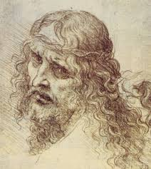

|
|||||||||||||||||||||||||||||||||


Contribution
Leonardo da Vinci had a long lasting effect on the artistic community. His did not have a gigantic list of contributions to the world, but he helped start and further the period of artistic development we know today as the renaissance.
Before the renaissance there were the dark ages, a time of unrest in Europe. The style of art during this 'dark age' was very crude and unlifelike, not unlike the ancient Egyptian art in the way it appeared. When Europe began to reform and drive out the 'barbarians', a time of rebirth began, termed today as the renaissance, which was a period when artists began to paint life-like artworks, and a lot of regious imagerywas included everywhere. This started out with people such as Dante Alighieri and his Divine Comedies, but others began to show themselves as well, as early as the 1400's. Da Vinci was one of these people, and his style of painting and sculpting was emulated by the other great renasance artists like Donatello. He even mentored some of them, such as Michealangelo, who went on to paint the Sistene Chapel and sculpt the David. His way of painting people the way they actually looked and making a person appear in a 3d plain on a 2d canvas was revolutionary at the time and a large step way from the gothic style of the dark ages.
He also invented many weapons of war that were technologically advanced for thier time, such as a tank, a parachute, and a helicopter, hundreds of years before the were concieved by thier inventors. These ideas were later brought to life, well after the death of da Vinci and beyond any usefulness these designs would have, to see if they would function, and suprisingly the tank and the parachute were both fully functional and astounding for someone in da Vinci's time. The helicopter did not work however, because the 'blade' was made of cloth and was powered by men running in circles. Da Vinci would need the invention fo the steam engine around 300 years in the future to do this. Unfortunately, da Vinci only included his ideas in a letter to the ruler of Milan, Ludovico Sforsa, as a type of resume, and while he did have the ideas and discoveries he made in science an mathmatics in a journal, no one but Ludovico saw them, due to the fact that the drawings were never officially published. Da Vinci had beautiful ideas flowing through his head, but his world never saw these ideas brought to frutation.
Da Vinci still has a grasp on today's society, as works such as his 'Mona Lisa', which is still a source of specuation today as to who really painted the painting. Such works are put up in Museums for the whole world to see. He even has his own museum in Florence and his name is still referenced in pop culture today, such as the Da Vinci code, albiet the fact that it is not really a book about da Vinci's artistic prowess. Upcoming artists today may even model themselves after da Vinci's style. In any case he will not be forgotten any time soon.